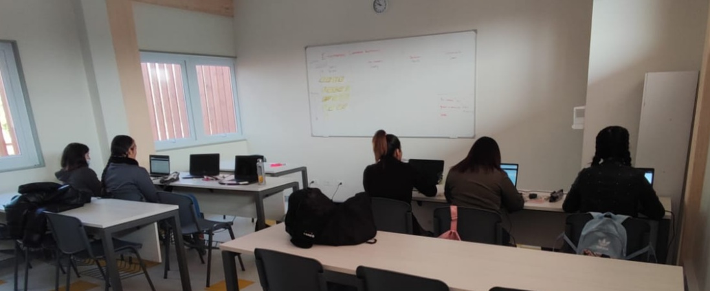
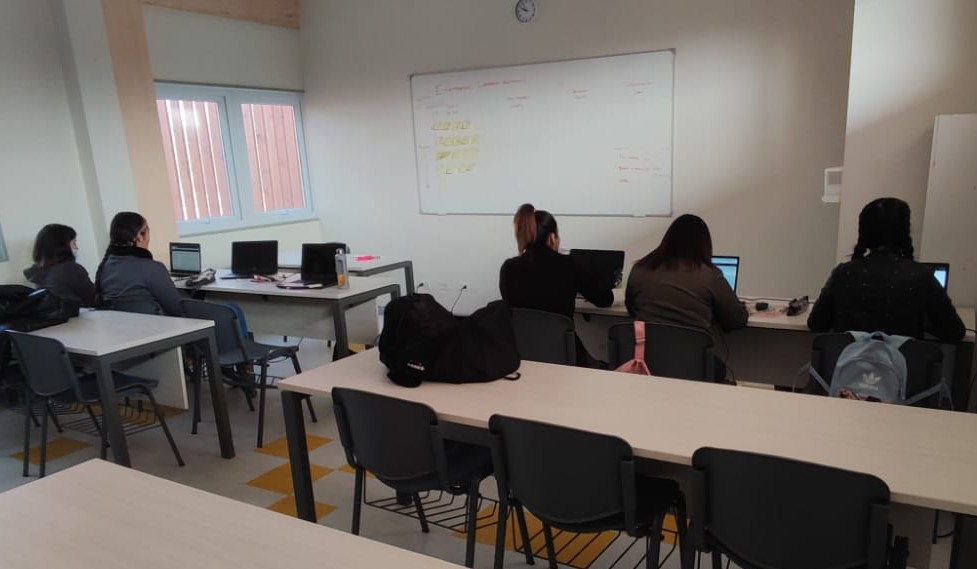
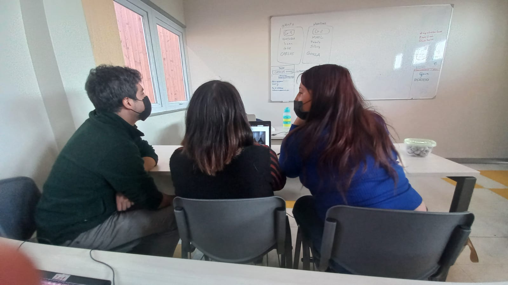
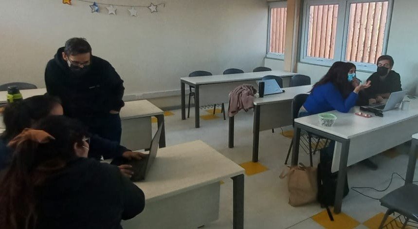
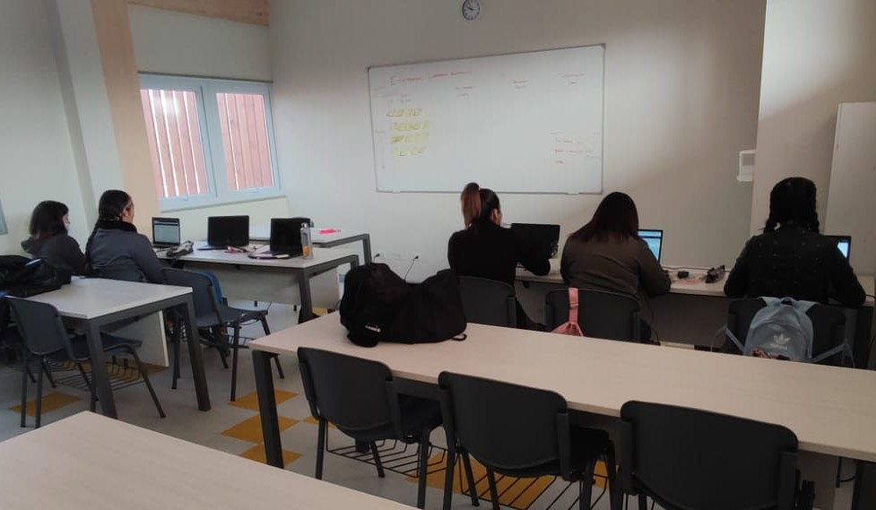
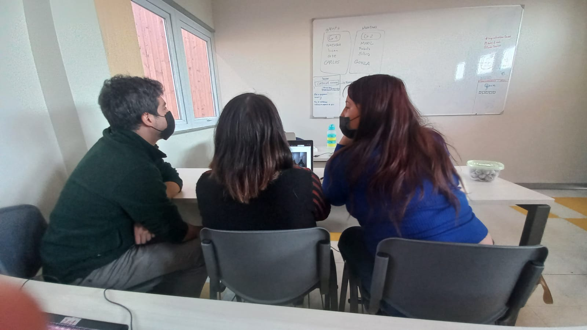
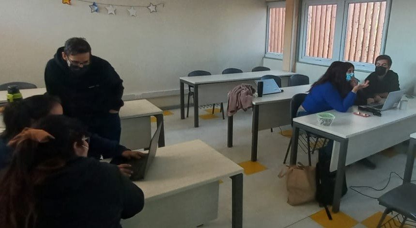

NOSOTRAS

 





¿Quienes somos?
Somos estudiantes de una fundación sin fines de lucro de madres adolescentes en el oficio de programación
¿Que es Programación?
En el ámbito de la informática, la programación refiere a la acción de crear programas o aplicaciones a través del desarrollo de un código fuente, que se basa en el conjunto de instrucciones que sigue el ordenador para ejecutar un programa.
Como nos prepara la fundación para el oficio
La fundación nos presta las herramientas necesarias tales como computadores, proyector, mouse con un entrenamiento presencial de programación con practicas del oficio por semestre de tal forma de poder integrarnos en el mercado laboral sin complicación alguna capacitadas con certificado correspondiente de oficio de programación
Tasa empleabilidad
En relación a la participación laboral regional de las mujeres, la CEPAL muestra que en 2020 la tasa se situó en 46%, seis puntos menos que en 2019, mientras que la de los hombres alcanzó al 69%. Las empresas que han contratado mujeres programadoras coinciden en que ellas destacan por su empatía, trabajo en equipo, influencia, orientación al logro, planificación y también por desarrollar las habilidades técnicas necesarias rápidamente.
La organización Soy Más es una fundación sin fines de lucro que trabaja para mejorar la calidad de vida de las jovenes embarazadas y madres solteras adolecentes , tambien brinda direntes tipos de poyo y guian a las jovenes a la formacion de un oficio y asi tengan empleabilidad.
Tambien la Fundación cuenta con diferentes carrerras u oficios como administración , artes culinarias , peluqueria y Programación.
La fundación se encuentra ubicada en:
Avenida Santa Rosa #14912 La Pintana.
Número de contacto:
+569 94587894
instagram: fundacion_soymas
Sitio web: https://instagram.com/fundacion_soymas